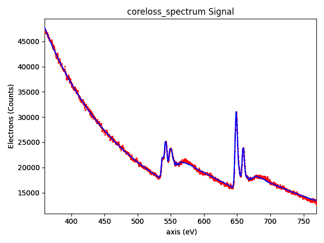

Note
Click here to download the full example code
EELS curve fitting#
Performs curve fitting to an EELS spectrum, plots the result and saves it as png file.
import hyperspy.api as hs
s = hs.load("coreloss_spectrum.msa", signal_type="EELS")
ll = hs.load("lowloss_spectrum.msa", signal_type="EELS")
s.add_elements(("Mn", "O"))
s.set_microscope_parameters(
beam_energy=300,
convergence_angle=24.6,
collection_angle=13.6
)
m = s.create_model(ll=ll)
m.enable_fine_structure()
m.multifit(kind="smart")
m.plot()
Total running time of the script: ( 0 minutes 1.719 seconds)